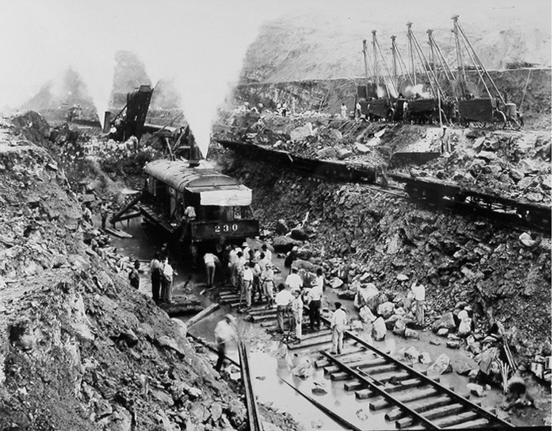
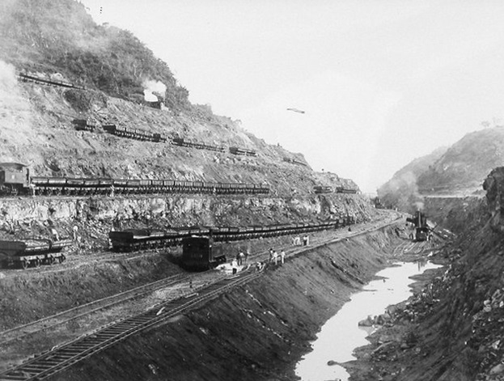
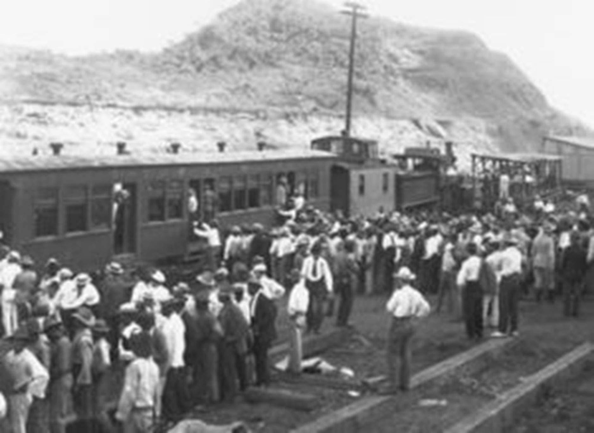

La misión de unir el mundo
 Trabajos de dragado en el Canal de Panamá. Foto: Autoridad del Canal de PanamáCruzar el Istmo de Panamá, fue para Vasco Núñez de Balboa el inicio de la unión de dos mares, pero sin imaginar que su idea cambiaría la vida del tránsito marítimo a nivel mundial.
Fue para 1513, cuando Vasco Núñez resaltó que a través de esta pequeña franja de tierra sería el sitio perfecto para la construcción de un paso que atravesaría el país desde el mar pacífico al caribe y viceversa.
Desde ese entonces se inició un movimiento liderado por el Rey de España, Carlos V, para llevar a cabo la construcción del paso que abriría la conexión de ambos océanos.
No fue para 1534 cuando de manera definitiva ingenieros empezaron con la elaboración de los planos, todo esto, guiados por el río Chagres, por ser uno de los afluentes que recorre casi todo el centro del país.
Aunque la misión se tornaba muy complicada, por la gran cantidad de áreas montañosas y pantanos, todo quedó allí, la idea no surgió.
Múltiples intentos de la obra
Fueron una serie de intentos que se efectuaron para realizar ese corte de camino que abriría paso a esa unión oceánica.
En 1827, se retomó la idea de unir ambos océanos, esta vez por la Gran Colombia, a quien pertenecía Panamá, y fue el presidente Simón Bolívar, quien planteó dicha unión, pero nunca fue puesta en práctica.
No fue para 1836, que el Gobierno de los Estados Unidos, ordenó a que se levantara un estudio que permitiría la construcción de un ferrocarril, pero ante el costo elevado que representaba dicha obra, todo quedó en nada y se suspendió.
Dos años después, una empresa francesa fue la que tomó el riesgo y tomó la iniciativa que le planteaban de la construcción de un ferrocarril o un canal, ellos en un inicio habían propuesto un canal de 19 km, que estaría entre la Bahía de Limón hasta la Bahía de Boca del Monte, pero de igual manera quedó en nada, por la falta de financiamiento.
 Inicios de la cosntrucción del Canal de Panamá. Foto: Autoridad del Canal de PanamáEl oro de California
No fue la fiebre del oro de California, que por fin dio esa motivación a que de una vez por todas iniciaran las obras para esta unificación de ambos mares, que se dio con la construcción de un ferrocarril, luego de que Estados Unidos, en 1848, ordenara una vez más una expedición para analizar la viabilidad en Panamá y Nicaragua.
Para 1950, se dio la primera palada que dio ese gran paso, la construcción del ferrocarril era una realidad que cambiaría la historia de un pequeño país.
Una obra de 77 km, que va desde Balboa hasta Gatún, a pesar de tener una serie de dificultades, que cobró la vida de decenas de obreros, culminó en 1855, cuando la primera locomotora transitó de mar a mar, haciendo realidad esta obra.
Pero no todo quedó ahí, la construcción del ferrocarril motivó a que los estudios para un canal interoceánico tomasen auge y se efectuaran.
Inicios de la mega obra
Luego de varios intentos de expediciones, tanto en México, Nicaragua y Panamá, el Gobierno estadounidense, finalmente optó por continuar la obra que habían dejado los franceses sobre el Istmo panameño.
Fue para 1903, cuando luego de una nueva expedición, iniciaron las gestiones para que Estados Unidos adquiera la construcción del canal, esto en medio de la gesta separatista de Panamá de Colombia.
En 1904, para el 4 de mayo, luego que el gobierno estadounidense comprara, por 40 millones de dólares, los derechos y propiedades del Canal Francés, dieron continuidad a esa mega obra y se creó la Comisión Ístmica del Canal para su construcción.
Diez años después de la construcción, para 1914 se dio la finalización del tan anhelado Canal de Panamá, que tuvo una inversión de $387 millones.
Su inauguración se dio con el paso del vapor “Ancón”, al ser la primera embarcación en transitar por de un océano al otro, el sábado 15 de agosto de 1914.
 Trabajos de construcción del Canal. Foto: Autoridad del Canal de PanamáReversión del canal a manos panameñas
En 1964 se llevó a cabo la denominada “Operación Banderas”, en la 4 de Julio, hoy día avenida de los Mártires, en la ciudad capital de Panamá, donde estudiantes salieron a protestar en la denominada Zona del Canal, habitada por los estadounidenses, en exigencia de que la Bandera panameña fuera izada junto a la de Estados Unidos, en esta área por ser territorio nacional.
Tras estos hechos que dejaron a vario estudiantes fallecidos y que se convirtieron en Mártires, para 1977, específicamente el 7 de septiembre, cuando el general Omar Torrijos Herrera, por Panamá, y el presidente Jimmy Carter, firmaron los tratados Torrijos-Carter y que entró en vigor en 1979, poniéndole fin así, al manejo del Canal por los estadounidenses y pasaría a manos panameñas.
El 31 de diciembre de 1999, salió el último soldado estadounidense de suelo istmeño, para que Panamá procediera a tomar el mando sobre el manejo administrativo del canal y que actualmente mantiene a través de la Autoridad del Canal de Panamá (ACP).

Luego de 6 años de estar en manos panameñas, el gobierno en turno convocó a un Referéndum, el 22 de octubre de 2006, donde la población, en un 76.86%, aprobó la ampliación del canal, que inició en 2007.
La ampliación se dio debido a la necesidad de que busques con dimensiones más grandes pudieran transitar por esta vía interoceánica rápida y ante el aumento de la demanda, finalmente el 26 de junio de 2016 se inauguró este tercer juego de esclusas con el paso del barco Cosco Shipping Panama, que es un tipo Neopanamax, por las esclusas de Cocolí y Agua Clara.
CANAL INTERACTIVO
Datos Curiosos
El profesor de Historia, Jorge Bermúdez, hizo un análisis sobre la situación de Panamá durante este proceso y relató lo que históricamente sucedió en la construcción del Canal de Panamá.
Entre las anécdotas que recalcó el profesor Bermúdez, fue que en la ruta de la construcción del tren hubo un pueblo llamado “Matachin”, que adquirió ese nombre por la cantidad de asiáticos que se llegaron a quitar la vida por la depresión en que se encontraban, relató que fueron más de 500 que tomaron esta decisión.
Esto sucedió porque los traían como esclavos, le pagaban el boleto del viaje y los hacían trabajar sin cobrar nada hasta que pagaran la deuda a la persona que los traía desde Asia.
Respecto a si existe la posibilidad de la construcción de un canal sobre Nicaragua, el catedrático destaco que cuando se dio el estudio en este país, se determinó que, por ser una zona volcánica, por lo que hacía inestable la construcción de un canal por los constantes movimientos telúricos, aunque destaca que esa posibilidad aún existe.
Bermúdez también mencionó la cantidad de mano de obra que trabajó, durante la construcción, cuando Estados Unidos tomó la administración, esto según los libros de historia y son: Antillanos con 29,667 personas; españoles con 8,722 trabajadores; 1,941 italianos; 1,403 colombianos; 357 panameños; 244 ticos; 19 franceses; 14 armenios y 69 personas no clasificadas.
En este sentido, el docente hace mención que a pesar de ser un canal en sueño panameño, la mano de obra que colaboró fue mínima a comparación de las otras, es decir, que poco tomaron en cuenta a los istmeños, pero que la mayor fue de los antillanos que se dividieron en: Barbados 10,448; Martinica 5,542; Trinidad y Tobago 1,284; Jamaica 67 y Antillas menores 17, 391.
Tránsito de barcos por el canal
A pesar de la llegada de la pandemia a nuestro país, cifras de La Autoridad del Canal de Panamá (ACP), revelan que el tráfico de embarcaciones, a pesar de que fue un poco bajo, los ingresos fueron elevados a comparación del año anterior.
En este sentido, la ACP, destacó que para 2019 transitaron 13,785 embarcaciones, mientras que para 2020 hubo una disminución con el tránsito de 13,369, en tanto, en 2021 fue de 13,342 barcos transitados.
Pero el informe refleja que aunque hubo esa disminución desde 2019 a 2021, el ingreso aumentó y para 2019 fue de $2,593 millones; para el 2020, en el pico de la pandemia, fue de $2,663 millones y para el 2021 fue de $2,968 millones.
En tanto, las toneladas de Largas de Carga, la ACP indicó que, para el 2019 fueron de 253,042,090; para el 2020 de 255,738,621 y en 2021 de 287,493,860
Respecto a las embarcaciones y el tamaño, la ACP destacó que hasta abril del año fiscal 2022, transitaron 5,554 barcos tipos Panamax, mientras que Neopanamax, fueron 2,100.
Los tipos de embarcaciones que transitaron según el segmento de mercado y tipos de esclusas están: Graneleros, con 1,500 panamax y 286 neopanamax; Portacontenedores, con 670 panamax y 941 neopanamax; Quimiqueros con 1,290 panamax y 10 neopanamax; Gaseros, con 380 panamax y 498 neopanamax; Portavehículos 404 panamax y 26 neopanamax; Refrigerados con 399 panamax; Carga General con 367 panamax y 3 neopanamax; Tanqueros con 242 panamax y 77 neopanamax; GNL 16 panamax y 219 neopanamax; Otros con 194 panamax y 16 neopanamax; Pasajeros 92 panamax y 24 neopanamax.